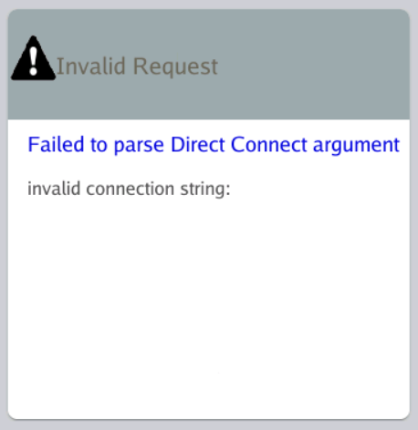
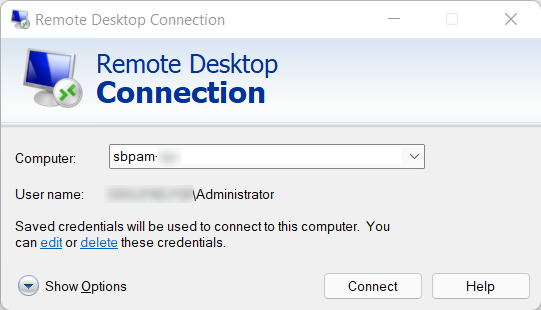

Summary
In a specific scenario, valid SbPAM DirectConnect strings used in mRemoteNG will result in an invalid connection string error, stating the connection string is empty.
Instructions
This error is caused by having credentials saved for the SbPAM server (i.e. SbPAM Proxy Server) in the Windows built-in RDP client, Remote Desktop Connection, on the same host that's running mRemoteNG.
To resolve the issue, there are two options:
1. Delete the credential saved in Remote Desktop Connection. After doing so, the valid DirectConnect string will work as expected in mRemoteNG.
2. Fill in a password for each DirectConnect connection saved in mRemoteNG. This resolves the issue without deleting any credentials from Remote Desktop Connection.